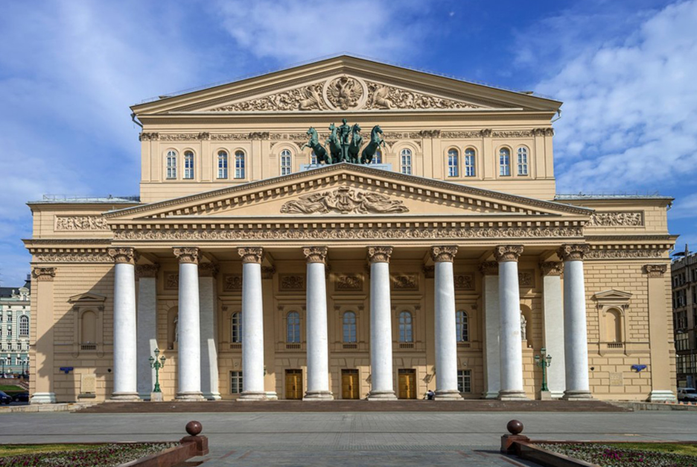

О архитектурных стилях

Архитектурный стиль — целостная совокупность характерных черт и признаков произведения архитектуры определённого времени и места. Стиль контаминирует характерные черты, проявляющиеся в особенностях творческого метода архитектора, способах формообразования, приёмах композиции, функциональной, конструктивной и художественной сторон. Развитие архитектурных стилей зависит от историко-культурных, климатических, технических, религиозных и многих других факторов.
В истории искусства архитектурные стили зарождались и развивались не только последовательно, один за другим, но и почти параллельно, взаимодействуя между собой. Известно одновременное сосуществование стилей в качестве альтернативы друг другу.
Понятие стиля, в частности, в середине XVIII века использовал немецкий историк искусства, «отец искусствознания» Иоганн Иоахим Винкельман. Основная масса трудов, посвящённых художественному стилю, была ориентирована на исследование природы самого явления и механизмов стилеобразования в искусстве и архитектуре в философском, культурологическом, семиотическом, системно-синергетическом аспектах. Поэтому в теории архитектуры и искусствоведении наиболее удобным и популярным «описательным средством» для архитектурных форм стало понятие стиля.

Архитектурный стиль, как и стиль в искусстве вообще, — понятие условное. Он удобен для осмысления истории европейской архитектуры. Однако для сопоставления истории архитектуры нескольких регионов стиль как описательное средство не подходит. Трудно выделить в истории архитектуры азиатских стран, например, архитектуры Китая, периоды, соответствующие архитектурным стилям Европы. Аналогичная проблема возникает при исследовании русской архитектуры.